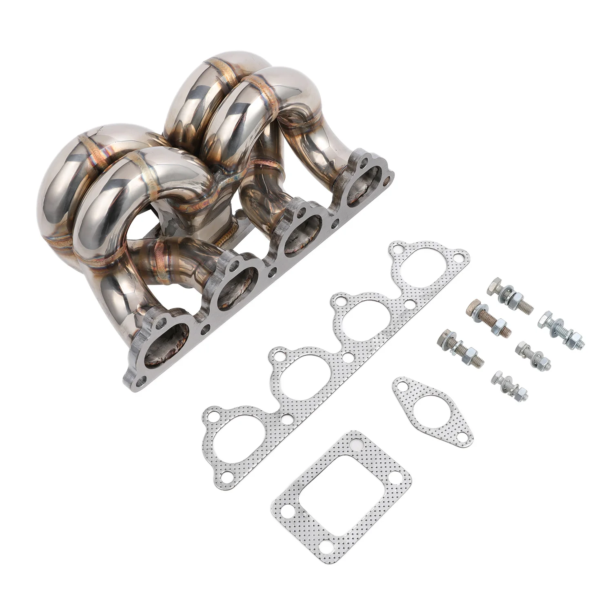

1 / 10FAPO kolektor turbosprężarka Do Honda Civic del Sol CRX D15 D16 SOHC T3 38mm WG Ram Horn
Aplikacja 1988-2000 Honda Civic z silnikami 1,5 l/1,6 l D15/D16 SOHC 1993-1997 Honda Civic del Sol z silnikami 1,5 l/1,6 l D15/D16 SOHC 1988-1991 Honda CRX z silnikami 1,5 l/1,6 l D15/D16 SOHC Tylko dla silników D15/D16 SOHC Niekompatybilny z zapasowa klimatyzacja i P/S Cechy Pasuje do hybrydowej turbosprężarki T3 lub T3/T4 Doskonała jakość i trwałość poprawiająca osiągi pojazdu Konstrukcja kolektora rurowego z leps…
Application 1988-2000 Honda Civic with 1.5L/1.6L D15/D16 SOHC motors 1993-1997 Honda Civic del Sol with 1.5L/1.6L D15/D16 SOHC motors 1988-1991 Honda CRX with 1.5L/1.6L D15/D16 SOHC motors For D15/D16 SOHC motors only Not compatible with stock A/C and P/S Features Fits T3 or T3/T4 hybrid turbo Excellent quality and durability to improve vehicle performance Tubular manifold design with better exhaust flow for more top-end power Equal length runners for balanced exhaust reversion and enhanced turbo performance Fully mandrel bent tubes made of high quality 16-gauge 304 stainless steel Head flanges laser-cut from high quality 7/16-inch thick steel plates Flange flattened by a hydraulic press for precise and leak-free sealing All joints are golden color TIG brass style welded to prevent cracking and wear Flanges chrome plated for corrosion resistance Polished surface for extra protection against rusting Accessories in the photos are included 1 year warranty for any manufacturing defect No instructions provided; professional install recommended Technical Specifications Manifold Type: Tubular Turbo Manifold Runner Diameter: 1-3/4 in. (45mm) Runner Layout: Equal Length Turbo Fitment: T3, T3/T4 Hybrid Turbo Mount Position: Low/Bottom Mount Wastegate Fitment: 35/38mm (2-bolt) Head Flange Thickness: 7/16 in. (11.5mm) Pipe Thickness: 16 gauge (1.5mm) Material: 304 Stainless Steel Finish: Polished
1399,99 PLN
Opis produktu
Aplikacja
- 1988-2000 Honda Civic z silnikami 1,5 l/1,6 l D15/D16 SOHC
- 1993-1997 Honda Civic del Sol z silnikami 1,5 l/1,6 l D15/D16 SOHC
- 1988-1991 Honda CRX z silnikami 1,5 l/1,6 l D15/D16 SOHC
- Tylko dla silników D15/D16 SOHC
- Niekompatybilny zzapasowa klimatyzacja i P/S
Cechy
- Pasuje do hybrydowej turbosprężarki T3 lub T3/T4
- Doskonała jakość i trwałość poprawiająca osiągi pojazdu
- Konstrukcja kolektora rurowego z lepszym przepływem spalin zapewnia większą moc najwyższej klasy
- Prowadnice o równej długości zapewniają zrównoważone cofanie wydechu i lepszą wydajność turbosprężarki
- Rury w pełni gięte trzpieniowo, wykonane z wysokiej jakości stali nierdzewnej 304 o średnicy 16 mm
- Kołnierze głowicy wycinane laserowo z wysokiej jakości blach stalowych o grubości 7/16 cala
- Kołnierz spłaszczony za pomocą prasy hydraulicznej dla precyzyjnego i szczelnego uszczelnienia
- Wszystkie połączenia są spawane metodą TIG w kolorze złotym, aby zapobiec pękaniu i zużyciu
- Kołnierze chromowane, co zapewnia odporność na korozję
- Polerowana powierzchnia dla dodatkowej ochrony przed rdzą
- W zestawie akcesoria widoczne na zdjęciach
- 1 rok gwarancji na wszelkie wady produkcyjne
- Brak instrukcji; zalecana profesjonalna instalacja
Dane techniczne
- Typ kolektora: Rurowy kolektor Turbo
- Średnica prowadnicy: 1-3/4 cala (45 mm)
- Układ prowadnicy: równa długość
- Montaż Turbo: T3, T3/T4 Hybrid
- Pozycja mocowania Turbo: mocowanie niskie/dolne
- Mocowanie Wastegate: 35/38 mm (2 śruby)
- Grubość kołnierza głowicy: 7/16 cala (11,5 mm)
- Grubość rury: 16 mm (1,5 mm)
- Materiał: stal nierdzewna 304
- Wykończenie: polerowane
Application
- 1988-2000 Honda Civic with 1.5L/1.6L D15/D16 SOHC motors
- 1993-1997 Honda Civic del Sol with 1.5L/1.6L D15/D16 SOHC motors
- 1988-1991 Honda CRX with 1.5L/1.6L D15/D16 SOHC motors
- For D15/D16 SOHC motors only
- Not compatible with stock A/C and P/S
Features
- Fits T3 or T3/T4 hybrid turbo
- Excellent quality and durability to improve vehicle performance
- Tubular manifold design with better exhaust flow for more top-end power
- Equal length runners for balanced exhaust reversion and enhanced turbo performance
- Fully mandrel bent tubes made of high quality 16-gauge 304 stainless steel
- Head flanges laser-cut from high quality 7/16-inch thick steel plates
- Flange flattened by a hydraulic press for precise and leak-free sealing
- All joints are golden color TIG brass style welded to prevent cracking and wear
- Flanges chrome plated for corrosion resistance
- Polished surface for extra protection against rusting
- Accessories in the photos are included
- 1 year warranty for any manufacturing defect
- No instructions provided; professional install recommended
Technical Specifications
- Manifold Type: Tubular Turbo Manifold
- Runner Diameter: 1-3/4 in. (45mm)
- Runner Layout: Equal Length
- Turbo Fitment: T3, T3/T4 Hybrid
- Turbo Mount Position: Low/Bottom Mount
- Wastegate Fitment: 35/38mm (2-bolt)
- Head Flange Thickness: 7/16 in. (11.5mm)
- Pipe Thickness: 16 gauge (1.5mm)
- Material: 304 Stainless Steel
- Finish: Polished
FAPO Polska
Ten produkt obsługujemy lokalnie
Autoryzowana obsługa
FAPO Polska prowadzi katalog, kontakt i zamówienia bez odsyłania klienta do zewnętrznych sklepów.
Dobór po aucie
Sprawdzamy dopasowanie produktu do pojazdu, rocznika i wersji przed finalizacją zamówienia.
Wsparcie po zakupie
Masz kontakt w Polsce w sprawach zamówień, wysyłki, gwarancji i zwrotów.